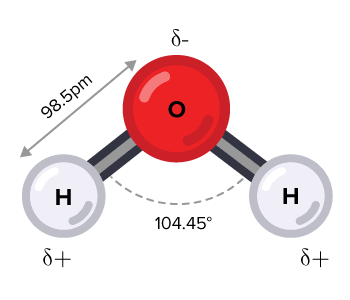

Sesión 1.1: Propiedades, ciclo hidrológico y contexto agrícola
| Unidad | 1 — El agua en la producción agrícola |
| Sesión | 1.1 |
| RAA | RAA1 |
| Duración | ~90 minutos |
| Contenido | Propiedades del agua, ciclo hidrológico, contexto agrícola global y chileno |
Al finalizar esta sesión, serás capaz de:
La agricultura consume el 70% del agua dulce extraída a nivel mundial
En Chile, el riego representa más del 80% del consumo de agua
Chile enfrenta la peor sequía de su historia:
- Más de 13 años consecutivos de déficit hídrico
- 70% de la población vive en zonas con escasez hídrica
- 157 comunas con decretos de escasez hídrica (2023)
- Reducción de caudales de hasta 40% en cuencas de la zona central
La eficiencia en el uso del agua NO es opcional — es urgente.

Cada molécula forma hasta 4 puentes de hidrógeno con moléculas vecinas
La distribución asimétrica de cargas genera un dipolo eléctrico:
Consecuencia: El agua es un solvente excepcional y tiene comportamiento cohesivo/adhesivo que explica TODOS los fenómenos de transporte en suelo y planta.
| Propiedad | Valor | Significado |
|---|---|---|
| Calor específico | 4.18 J/g·°C | Alta capacidad de absorber calor sin cambiar T° |
| Calor latente de fusión | 334 J/g | Protege tejidos de congelación |
| Calor latente de vaporización | 2.45 MJ/kg | Potente mecanismo de enfriamiento |
Relevancia agrícola:
- El suelo húmedo se calienta más lento → protege raíces
- La transpiración enfría la hoja (equivalente a ~500 W/m² de disipación de calor)
- Riesgo de heladas mayor en suelo seco
| Propiedad | Definición | Importancia agrícola |
|---|---|---|
| Cohesión | Atracción entre moléculas de agua (puentes H) | Permite ascenso de savia en xilema bajo tensión (hasta >100 m en árboles) |
| Adhesión | Atracción del agua a superficies sólidas | Retiene agua en la matriz del suelo y paredes celulares |
| Tensión superficial | Fuerza en la interfaz agua-aire (72.8 mN/m) | Determina retención capilar en poros del suelo |
Cohesión + Adhesión = Capilaridad: el agua asciende contra gravedad en tubos finos y poros del suelo.
El agua es el solvente universal — disuelve más sustancias que cualquier otro líquido.
Relevancia para el sistema suelo-planta:
- Disuelve nutrientes minerales en el suelo (\(\text{NO}_3^-\), \(\text{K}^+\), \(\text{Ca}^{2+}\), etc.)
- Transporta solutos en el xilema y floema
- Medio para reacciones bioquímicas en la célula
- Responsable del potencial osmótico (Ψo) → Unidad 3
Dato clave: 1 kg de suelo puede contener entre 0.1 y 0.5 g de sales disueltas. Con riego insuficiente, estas sales se concentran → salinización.
Cada molécula de agua forma hasta 4 puentes de hidrógeno con moléculas vecinas.
Los puentes de hidrógeno explican:
1. Alto calor específico: romper puentes H consume energía → estabilidad térmica
2. Alto calor latente: vaporizar agua requiere romper TODOS los puentes H
3. Cohesión: las moléculas se “encadenan” → columna de agua en xilema
4. Tensión superficial: en la superficie las moléculas solo tienen puentes H hacia abajo y los lados
5. Expansión al congelarse: estructura cristalina abierta → suelo se agrieta, beneficia estructura
| Propiedad | Valor (20°C) | Efecto en el sistema |
|---|---|---|
| Densidad | 0.998 g/cm³ | Agua más densa a 4°C; el hielo flota |
| Viscosidad dinámica | 1.002 mPa·s | Resiste flujo en poros finos |
| Constante dieléctrica | 80.1 | Alta capacidad de disolver sales |
Viscosidad y temperatura: El agua a 5°C es ~1.7× más viscosa que a 25°C. → En suelo frío, el agua se mueve más lento → menor disponibilidad para la planta.
Ecuación del balance hídrico:
\[P = ET + Q + \Delta S + R\]
| Símbolo | Componente | Descripción |
|---|---|---|
| \(P\) | Precipitación | Lluvia, nieve, granizo |
| \(ET\) | Evapotranspiración | Evaporación del suelo + transpiración de plantas |
| \(Q\) | Escorrentía | Agua que fluye superficialmente a ríos y lagos |
| \(\Delta S\) | Cambio en almacenamiento | Variación del agua en suelo, acuíferos, nieve |
| \(R\) | Recarga subterránea | Agua que percola a acuíferos profundos |
| Zona | Precipitación (mm/año) | ETo (mm/año) | Balance |
|---|---|---|---|
| Norte Grande (Arica) | < 1 | ~1,800 | Déficit extremo |
| Norte Chico (La Serena) | ~100 | ~1,500 | Déficit severo |
| Zona Central (Santiago) | ~340 | ~1,350 | Déficit ~1,000 mm |
| Zona Sur (Temuco) | ~1,200 | ~850 | Superávit |
| Zona Austral (Pto. Montt) | ~1,800 | ~650 | Alto superávit |
En la zona de mayor producción agrícola (central), el déficit hídrico supera los 1,000 mm/año
| Región | Superficie regada (M ha) | % del total mundial | Eficiencia predominante |
|---|---|---|---|
| Asia | 234 | 68% | 40-55% (inundación) |
| Américas | 52 | 15% | 50-75% (mixto) |
| Europa | 26 | 8% | 60-80% (aspersión) |
| África | 15 | 4% | 35-50% (superficie) |
| Oceanía | 3 | 1% | 70-90% (presurizado) |
Superficie regada mundial: ~342 millones de hectáreas (FAO, 2020)
| Sistema | Eficiencia típica | Agua aprovechada | Pérdidas principales |
|---|---|---|---|
| Inundación / Tendido | 30-45% | 3-4.5 de cada 10 L | Percolación profunda, escorrentía |
| Surco | 40-65% | 4-6.5 de cada 10 L | Percolación al final del surco |
| Aspersión (cañón) | 60-75% | 6-7.5 de cada 10 L | Evaporación, arrastre por viento |
| Pivote central | 75-90% | 7.5-9 de cada 10 L | Evaporación (menor) |
| Goteo | 85-95% | 8.5-9.5 de cada 10 L | Mínimas (evaporación localizada) |
| Zona | Regiones | Clima | Cultivos principales | Fuente de agua |
|---|---|---|---|---|
| Norte Grande | XV, I, II | Árido | Hortalizas, olivos, cítricos | Acuíferos, ríos escasos |
| Norte Chico | III, IV | Semiárido | Uva de mesa, paltos, mandarinas | Embalses, ríos |
| Zona Central | V, RM, VI | Mediterráneo | Frutales, viñas, maíz, hortalizas | Ríos, canales, embalses |
| Zona Centro-Sur | VII, VIII | Mediterráneo húmedo | Cereales, remolacha, frutales | Ríos, lluvia |
| Zona Sur-Austral | IX-XIV | Templado lluvioso | Praderas, papas, cereales | Principalmente lluvia |
Chile tiene aproximadamente 1.1 millones de hectáreas bajo riego.
| Región | Superficie regada (ha) | Principal fuente |
|---|---|---|
| Coquimbo (IV) | ~85,000 | Embalses (La Paloma, Puclaro) |
| Valparaíso (V) | ~95,000 | Río Aconcagua |
| Metropolitana (RM) | ~150,000 | Río Maipo |
| O’Higgins (VI) | ~210,000 | Río Cachapoal, Tinguiririca |
| Maule (VII) | ~360,000 | Río Maule, embalses |
| Ñuble-Biobío (VIII-XVI) | ~200,000 | Ríos, lluvia |
Fuente: Censo Agropecuario 2021 (INE) / CNR
Contexto:
- Provincia de Petorca (V Región): principal zona productora de palta en Chile
- 1 kg de palta requiere ~2,000 L de agua
- La zona tiene déficit hídrico estructural con sequía prolongada
Problema documentado:
- Extracción de agua subterránea excede la recarga natural
- Denuncias de extracción ilegal y desvío de ríos
- Pequeños agricultores sin acceso a agua mientras grandes predios expanden
Pregunta para reflexión: ¿Es sostenible exportar 180,000 toneladas de palta al año desde una zona con escasez hídrica?
Definición: Volumen total de agua dulce utilizado para producir un bien o servicio.
| Componente | Símbolo | ¿Qué incluye? | Ejemplo para un cultivo |
|---|---|---|---|
| Huella azul | \(HF_{azul}\) | Agua superficial y subterránea consumida (riego) | Agua extraída del río o pozo que el cultivo transpira |
| Huella verde | \(HF_{verde}\) | Agua de lluvia almacenada en el suelo y usada por el cultivo | Agua de precipitación retenida en la zona radical |
| Huella gris | \(HF_{gris}\) | Agua necesaria para diluir contaminantes hasta estándares aceptables | Agua para diluir nitratos lixiviados de fertilizantes |
\[HF_{total} = HF_{azul} + HF_{verde} + HF_{gris}\]
| Producto | HF azul | HF verde | HF gris | HF total (L/kg) |
|---|---|---|---|---|
| Palta | 850 | 1,150 | 80 | 2,080 |
| Uva de mesa | 210 | 390 | 30 | 630 |
| Manzana | 130 | 360 | 20 | 510 |
| Maíz | 200 | 700 | 50 | 950 |
| Trigo | 350 | 950 | 70 | 1,370 |
| Tomate (goteo) | 60 | 120 | 15 | 195 |
| Lechuga | 20 | 220 | 10 | 250 |
Fuente: Water Footprint Network (waterfootprint.org). Los valores de HF azul varían según zona y eficiencia de riego.
Comparación de cultivos chilenos de exportación:
| Cultivo | L/kg | Exportación (ton/año) | Agua virtual exportada |
|---|---|---|---|
| Palta | 2,080 | ~180,000 | ~374 millones de m³ |
| Uva de mesa | 630 | ~650,000 | ~410 millones de m³ |
| Cerezas | ~800 | ~350,000 | ~280 millones de m³ |
| Manzanas | 510 | ~700,000 | ~357 millones de m³ |
Chile exporta ~11,000 millones de m³ de agua virtual al año en productos agrícolas
Esto equivale a ~18 veces el volumen del embalse El Yeso (principal fuente de agua de Santiago)
Agua virtual: Agua utilizada en el país de origen para producir un bien que luego se exporta. El agua no viaja físicamente con el producto — es “virtual”.
Implicancias para Chile:
- Exportar fruta = exportar agua de zonas con escasez
- La zona central concentra la producción frutícola Y el déficit hídrico
- Tensión entre rentabilidad económica de la fruticultura y sostenibilidad hídrica
Herramienta de análisis: ¿Estamos exportando los cultivos correctos desde las zonas correctas?
Proyecciones para la zona central (2030-2050):
- ↓ 10-30% en precipitación anual
- ↑ 1.5-2.5°C en temperatura media
- ↓ 20-40% en caudales de ríos nivo-pluviales
- ↑ Demanda evaporativa (ETo) → ↑ Necesidad de riego
- Retroceso de glaciares → menor reserva estratégica de agua
Menos agua disponible + más demanda = mayor presión sobre el riego
| Zona | Impacto proyectado | Consecuencia para el riego |
|---|---|---|
| Norte Grande-Chico | Menor recarga de acuíferos | Insostenibilidad de cultivos de alto consumo |
| Zona Central | Déficit hídrico más severo | Competencia agua agrícola vs. urbano |
| Zona Sur | Disminución de lluvias estivales | Aumento de superficie bajo riego suplementario |
| Zona Austral | Derretimiento de glaciares | Alteración del régimen hidrológico |
→ Urgencia de formar profesionales capacitados en gestión eficiente del riego
Problema: Un predio de 50 ha de palto en la V Región produce 12 ton/ha·año. El riego aplicado es de 12,000 m³/ha·año (toda el agua es de pozo = huella azul). La lluvia efectiva es de 180 mm/año (huella verde). El nitrógeno lixiviado requiere 300 m³/ha·año para dilución (huella gris).
Calcule:
1. Huella azul por kg de palta
2. Huella verde por kg de palta
3. Huella total por kg
4. Compare con el promedio global (2,080 L/kg)
Resuelve en 5 minutos. Discute con tu compañero.
| Término | Definición breve |
|---|---|
| Dipolo eléctrico | Molécula con distribución asimétrica de carga |
| Puente de hidrógeno | Atracción electrostática entre H (δ+) y O (δ-) de moléculas vecinas |
| Calor latente de vaporización | Energía necesaria para cambiar agua líquida a vapor sin cambiar T° |
| Tensión superficial | Fuerza de cohesión en la superficie del agua que resiste penetración |
| Huella hídrica azul | Agua de riego (superficial y subterránea) consumida |
| Agua virtual | Agua usada para producir un bien exportado |
| Eficiencia de aplicación (Ea) | Fracción del agua aplicada que queda disponible para el cultivo |
El agua es una molécula polar — sus propiedades (cohesión, adhesión, calor específico, poder disolvente) determinan todo su comportamiento en suelo y planta
El ciclo hidrológico es un balance: \(P = ET + Q + \Delta S + R\)
La agricultura consume el 70% del agua dulce mundial; en Chile más del 80%. La eficiencia de riego varía de 30% (inundación) a 95% (goteo)
La huella hídrica (azul + verde + gris) contabiliza toda el agua necesaria para producir un bien
Chile es exportador neto de agua virtual (~11,000 millones de m³/año) vía productos agrícolas — principalmente desde la zona con mayor déficit hídrico
El cambio climático reducirá la disponibilidad de agua en la zona central en 10-40% — la eficiencia en riego es urgente
Sesión 1.2: El continuo suelo-planta-atmósfera
→ ¿Cómo se mueve el agua desde el suelo hasta la atmósfera pasando por la planta? → ¿Qué es el potencial hídrico y por qué es el concepto más importante el curso?
Lectura recomendada: Características de la molécula de agua y su importancia en la relación suelo-agua-planta-atmósfera (disponible en material complementario).
¿Por qué la molécula de agua es un dipolo y qué implicancias tiene para la retención de agua en el suelo?
¿Qué significa el concepto de “agua virtual” y cómo se aplica a las exportaciones agrícolas chilenas?
¿Cuál es la diferencia entre huella hídrica azul, verde y gris? Dé un ejemplo de cada una para un cultivo de maíz.
¿En qué zonas de Chile se concentra la agricultura de riego y cuál es el balance hídrico (P - ETo) en cada una?
¿Cómo afecta el cambio climático proyectado a la disponibilidad de agua para riego en la zona central? Mencione al menos 3 impactos.
Compare la eficiencia de riego por inundación vs. goteo. ¿Cuánta más agua disponible para el cultivo hay con goteo?
Calcule: un predio de palto produce 15 ton/ha, aplica 13,500 m³/ha de riego. ¿Cuál es la huella azul en L/kg?
TAG2027 — Relación Suelo Agua Planta | UDLA